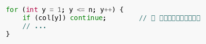
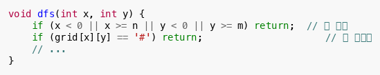
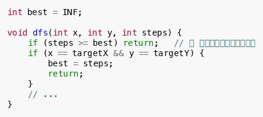
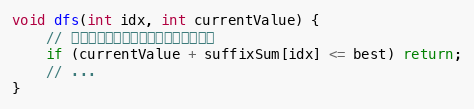
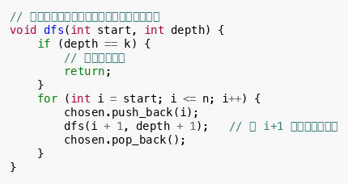

剪枝（Pruning）是搜索中最关键的优化手段。它的核心思想是：在搜索过程中，一旦发现当前分支不可能产生有效解，就立即停止该分支的搜索，从而节省大量时间。
💡 "不搜" 比 "搜得快" 更重要。
为什么需要剪枝？
以 N 皇后问题为例：
-
不加剪枝：需要枚举
种放置方案
-
加入基本剪枝：同一列、同一对角线不能放，枚举量大幅下降
- 加入更强剪枝：可以进一步减少无效搜索
CSP 考试中，第 2~3 题的搜索题通常不剪枝就会超时，因此剪枝是必备技能。
剪枝的分类
一、可行性剪枝（新手必须掌握）
定义： 当前分支已经违反了题目的硬性约束，不可能得到合法解，直接返回。
典型场景：
- N 皇后中，同一列或对角线已有皇后
-
走迷宫时，下一步是障碍物或越界
-
背包问题中，当前重量已超过容量
示例：N 皇后的列剪枝

示例：迷宫越界剪枝

二、最优性剪枝（挑战版重点）
定义： 当前分支即使走到最后，也不可能比已找到的最优解更好，直接返回。
典型场景：
- 求最短路径时，当前步数已不少于已找到的最优解
-
求最小花费时，当前花费已超过已找到的最小值
-
求最大价值时，当前价值加上剩余全部价值也不超过已找到的最大值
示例：求最短路径的步数剪枝

示例：剩余价值上界剪枝（背包/选数类）

三、重复性剪枝（挑战版重点）
定义： 避免搜索等价的状态，防止同一解被多次枚举。
典型场景：
- 组合枚举时，
和
是同一个组合
-
排列枚举时，通过规定顺序避免重复
-
对称状态的去除
示例：组合枚举去重

剪枝策略速查表
| 剪枝类型 | 判断依据 | 适用场景 | 难度 |
|---|---|---|---|
| 可行性剪枝 | 当前状态已违反约束 | 所有搜索题 | 入门 |
| 最优性剪枝（当前值） | 当前值已不优于最优解 | 求最值 | 普及 |
| 最优性剪枝（上界/下界） | 当前值 + 剩余潜力 不优于最优解 | 求最值、背包 | 提高 |
| 重复性剪枝 | 当前状态与之前某个状态等价 | 组合枚举、对称问题 | 提高 |
| 预处理排序剪枝 | 按某种顺序处理，优先搜索更可能的分支 | 数独、图着色 | 提高 |
新手 vs 挑战版剪枝要求
| 级别 | 要求 | 说明 |
|---|---|---|
| 新手版 | 掌握可行性剪枝 | 遇到不合法状态立即返回，这是所有搜索题的基础 |
| 挑战版 | 熟练最优性剪枝 + 重复性剪枝 | 在时间限制内找到最优解，需要强力剪枝 |